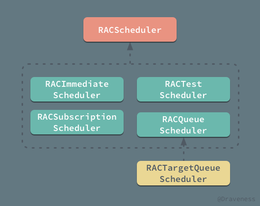
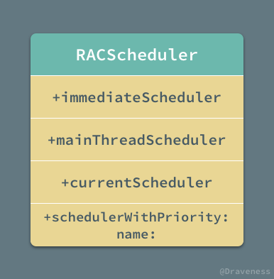
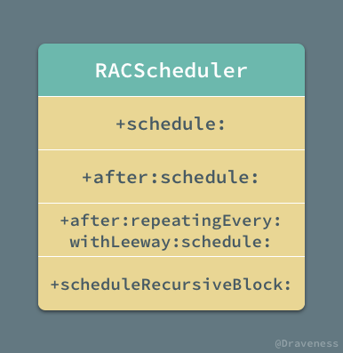
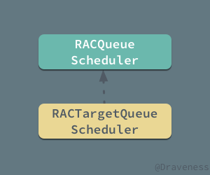
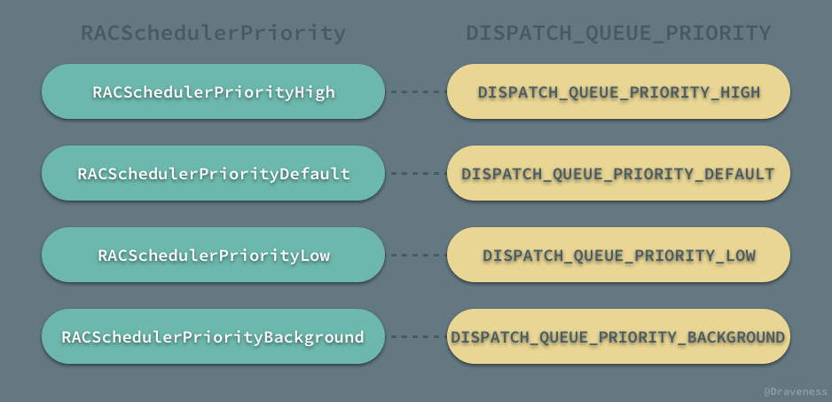
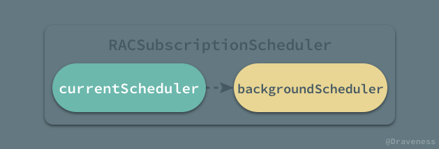

<!DOCTYPE HTML>
<html lang="" >
    <head>
        <meta charset="UTF-8">
        <meta content="text/html; charset=utf-8" http-equiv="Content-Type">
        <title>RACScheduler · GitBook</title>
        <meta http-equiv="X-UA-Compatible" content="IE=edge" />
        <meta name="description" content="">
        <meta name="generator" content="GitBook 3.2.3">
        
        
        
    
    <link rel="stylesheet" href="../../gitbook/style.css">

    
            
                
                <link rel="stylesheet" href="../../gitbook/gitbook-plugin-highlight/website.css">
                
            
                
                <link rel="stylesheet" href="../../gitbook/gitbook-plugin-search/search.css">
                
            
                
                <link rel="stylesheet" href="../../gitbook/gitbook-plugin-fontsettings/website.css">
                
            
        

    

    
        
    
        
    
        
    
        
    
        
    
        
    

        
    
    
    <meta name="HandheldFriendly" content="true"/>
    <meta name="viewport" content="width=device-width, initial-scale=1, user-scalable=no">
    <meta name="apple-mobile-web-app-capable" content="yes">
    <meta name="apple-mobile-web-app-status-bar-style" content="black">
    <link rel="apple-touch-icon-precomposed" sizes="152x152" href="../../gitbook/images/apple-touch-icon-precomposed-152.png">
    <link rel="shortcut icon" href="../../gitbook/images/favicon.ico" type="image/x-icon">

    
    <link rel="next" href="RACSequence.html" />
    
    
    <link rel="prev" href="RACMulticastConnection.html" />
    

    </head>
    <body>
        
<div class="book">
    <div class="book-summary">
        
            
<div id="book-search-input" role="search">
    <input type="text" placeholder="Type to search" />
</div>

            
                <nav role="navigation">
                


<ul class="summary">
    
    

    

    
        
        
    
        <li class="chapter " data-level="1.1" data-path="../../">
            
                <a href="../../">
            
                    
                    iOS 开发
            
                </a>
            

            
            <ul class="articles">
                
    
        <li class="chapter " data-level="1.1.1" data-path="../../ObjC-Basic/">
            
                <a href="../../ObjC-Basic/">
            
                    
                    Objective-C 语言基础
            
                </a>
            

            
            <ul class="articles">
                
    
        <li class="chapter " data-level="1.1.1.1" data-path="../../ObjC-Basic/Class.html">
            
                <a href="../../ObjC-Basic/Class.html">
            
                    
                    类与对象
            
                </a>
            

            
        </li>
    
        <li class="chapter " data-level="1.1.1.2" data-path="../../ObjC-Basic/Block.html">
            
                <a href="../../ObjC-Basic/Block.html">
            
                    
                    Block 编程
            
                </a>
            

            
        </li>
    
        <li class="chapter " data-level="1.1.1.3" data-path="../../ObjC-Basic/Runtime.html">
            
                <a href="../../ObjC-Basic/Runtime.html">
            
                    
                    Objective-C Runtime
            
                </a>
            

            
        </li>
    
        <li class="chapter " data-level="1.1.1.4" data-path="../../ObjC-Basic/MM.html">
            
                <a href="../../ObjC-Basic/MM.html">
            
                    
                    Objective-C 内存管理
            
                </a>
            

            
        </li>
    
        <li class="chapter " data-level="1.1.1.5" data-path="../../ObjC-Basic/Runloop.html">
            
                <a href="../../ObjC-Basic/Runloop.html">
            
                    
                    Runloop
            
                </a>
            

            
        </li>
    

            </ul>
            
        </li>
    
        <li class="chapter " data-level="1.1.2" data-path="../../Cocoa-Touch/">
            
                <a href="../../Cocoa-Touch/">
            
                    
                    Cocoa Touch
            
                </a>
            

            
            <ul class="articles">
                
    
        <li class="chapter " data-level="1.1.2.1" data-path="../../Cocoa-Touch/Event-Handling.html">
            
                <a href="../../Cocoa-Touch/Event-Handling.html">
            
                    
                    事件处理
            
                </a>
            

            
        </li>
    
        <li class="chapter " data-level="1.1.2.2" data-path="../../Cocoa-Touch/UIApplication.html">
            
                <a href="../../Cocoa-Touch/UIApplication.html">
            
                    
                    UIApplication
            
                </a>
            

            
        </li>
    
        <li class="chapter " data-level="1.1.2.3" data-path="../../Cocoa-Touch/UIView-Basic.html">
            
                <a href="../../Cocoa-Touch/UIView-Basic.html">
            
                    
                    UIView
            
                </a>
            

            
        </li>
    
        <li class="chapter " data-level="1.1.2.4" data-path="../../Cocoa-Touch/UIViewController.html">
            
                <a href="../../Cocoa-Touch/UIViewController.html">
            
                    
                    UIViewController
            
                </a>
            

            
        </li>
    
        <li class="chapter " data-level="1.1.2.5" data-path="../../Cocoa-Touch/Animation.html">
            
                <a href="../../Cocoa-Touch/Animation.html">
            
                    
                    动画
            
                </a>
            

            
        </li>
    
        <li class="chapter " data-level="1.1.2.6" data-path="../../Cocoa-Touch/Network.html">
            
                <a href="../../Cocoa-Touch/Network.html">
            
                    
                    网络编程
            
                </a>
            

            
        </li>
    
        <li class="chapter " data-level="1.1.2.7" data-path="../../Cocoa-Touch/Multithreading.html">
            
                <a href="../../Cocoa-Touch/Multithreading.html">
            
                    
                    并发编程
            
                </a>
            

            
        </li>
    
        <li class="chapter " data-level="1.1.2.8" data-path="../../Cocoa-Touch/File-System.html">
            
                <a href="../../Cocoa-Touch/File-System.html">
            
                    
                    文件系统
            
                </a>
            

            
        </li>
    
        <li class="chapter " data-level="1.1.2.9" data-path="../../Cocoa-Touch/Design.html">
            
                <a href="../../Cocoa-Touch/Design.html">
            
                    
                    设计模式
            
                </a>
            

            
        </li>
    
        <li class="chapter " data-level="1.1.2.10" data-path="../../Cocoa-Touch/Performance.html">
            
                <a href="../../Cocoa-Touch/Performance.html">
            
                    
                    性能
            
                </a>
            

            
        </li>
    

            </ul>
            
        </li>
    
        <li class="chapter " data-level="1.1.3" data-path="../../Swift/">
            
                <a href="../../Swift/">
            
                    
                    Swift
            
                </a>
            

            
            <ul class="articles">
                
    
        <li class="chapter " data-level="1.1.3.1" data-path="../../Swift/Class.html">
            
                <a href="../../Swift/Class.html">
            
                    
                    类与对象
            
                </a>
            

            
        </li>
    
        <li class="chapter " data-level="1.1.3.2" data-path="../../Swift/Struct-And-Enum.html">
            
                <a href="../../Swift/Struct-And-Enum.html">
            
                    
                    结构体与枚举
            
                </a>
            

            
        </li>
    
        <li class="chapter " data-level="1.1.3.3" data-path="../../Swift/Function-And-Closure.html">
            
                <a href="../../Swift/Function-And-Closure.html">
            
                    
                    函数与闭包
            
                </a>
            

            
        </li>
    

            </ul>
            
        </li>
    
        <li class="chapter " data-level="1.1.4" data-path="../../Interview/">
            
                <a href="../../Interview/">
            
                    
                    面试问题
            
                </a>
            

            
            <ul class="articles">
                
    
        <li class="chapter " data-level="1.1.4.1" data-path="../../Interview/iOSInterviewQuestions/">
            
                <a href="../../Interview/iOSInterviewQuestions/">
            
                    
                    《招聘一个靠谱的iOS》
            
                </a>
            

            
            <ul class="articles">
                
    
        <li class="chapter " data-level="1.1.4.1.1" data-path="../../Interview/iOSInterviewQuestions/Volume-One/volume-one.html">
            
                <a href="../../Interview/iOSInterviewQuestions/Volume-One/volume-one.html">
            
                    
                    《招聘一个靠谱的iOS》(上)
            
                </a>
            

            
        </li>
    
        <li class="chapter " data-level="1.1.4.1.2" data-path="../../Interview/iOSInterviewQuestions/Volume-Two/volume-two.html">
            
                <a href="../../Interview/iOSInterviewQuestions/Volume-Two/volume-two.html">
            
                    
                    《招聘一个靠谱的iOS》(下)
            
                </a>
            

            
        </li>
    

            </ul>
            
        </li>
    
        <li class="chapter " data-level="1.1.4.2" data-path="../../interview/ZhiHu-QA/">
            
                <a href="../../interview/ZhiHu-QA/">
            
                    
                    关于一些 iOS 面试问题的解答
            
                </a>
            

            
        </li>
    
        <li class="chapter " data-level="1.1.4.3" data-path="../../interview/iOSDeveloperQA/">
            
                <a href="../../interview/iOSDeveloperQA/">
            
                    
                    iOS 开发面试问题
            
                </a>
            

            
        </li>
    
        <li class="chapter " data-level="1.1.4.4" data-path="../../interview/MXR-QA/">
            
                <a href="../../interview/MXR-QA/">
            
                    
                    MXR 面试问题
            
                </a>
            

            
        </li>
    

            </ul>
            
        </li>
    
        <li class="chapter " data-level="1.1.5" data-path="../">
            
                <a href="../">
            
                    
                    源码分析
            
                </a>
            

            
            <ul class="articles">
                
    
        <li class="chapter " data-level="1.1.5.1" data-path="../AFNetworking/AFNetworking_1.html">
            
                <a href="../AFNetworking/AFNetworking_1.html">
            
                    
                    AFNetworking
            
                </a>
            

            
            <ul class="articles">
                
    
        <li class="chapter " data-level="1.1.5.1.1" data-path="../AFNetworking/AFNetworking_2.html">
            
                <a href="../AFNetworking/AFNetworking_2.html">
            
                    
                    AFURLSessionManager
            
                </a>
            

            
        </li>
    
        <li class="chapter " data-level="1.1.5.1.2" data-path="../AFNetworking/AFNetworking_3.html">
            
                <a href="../AFNetworking/AFNetworking_3.html">
            
                    
                    AFURLSerialization
            
                </a>
            

            
        </li>
    
        <li class="chapter " data-level="1.1.5.1.3" data-path="../AFNetworking/AFNetworking_4.html">
            
                <a href="../AFNetworking/AFNetworking_4.html">
            
                    
                    AFNetworkReachabilityManager
            
                </a>
            

            
        </li>
    
        <li class="chapter " data-level="1.1.5.1.4" data-path="../AFNetworking/AFNetworking_5.html">
            
                <a href="../AFNetworking/AFNetworking_5.html">
            
                    
                    HTTPS
            
                </a>
            

            
        </li>
    

            </ul>
            
        </li>
    
        <li class="chapter " data-level="1.1.5.2" data-path="../Alamofire/">
            
                <a href="../Alamofire/">
            
                    
                    Alamofire
            
                </a>
            

            
        </li>
    
        <li class="chapter " data-level="1.1.5.3" data-path="../architecture/mvx.html">
            
                <a href="../architecture/mvx.html">
            
                    
                    architecture
            
                </a>
            

            
            <ul class="articles">
                
    
        <li class="chapter " data-level="1.1.5.3.1" data-path="../architecture/mvx-model.html">
            
                <a href="../architecture/mvx-model.html">
            
                    
                    MVX-Model
            
                </a>
            

            
        </li>
    
        <li class="chapter " data-level="1.1.5.3.2" data-path="../architecture/mvx-view.html">
            
                <a href="../architecture/mvx-view.html">
            
                    
                    MVX-View
            
                </a>
            

            
        </li>
    
        <li class="chapter " data-level="1.1.5.3.3" data-path="../architecture/mvx-controller.html">
            
                <a href="../architecture/mvx-controller.html">
            
                    
                    MVX-Controller
            
                </a>
            

            
        </li>
    

            </ul>
            
        </li>
    
        <li class="chapter " data-level="1.1.5.4" >
            
                <span>
            
                    
                    AsyncDisplayKit
            
                </span>
            

            
            <ul class="articles">
                
    
        <li class="chapter " data-level="1.1.5.4.1" data-path="../AsyncDisplayKit/ASDK_1.html">
            
                <a href="../AsyncDisplayKit/ASDK_1.html">
            
                    
                    提升界面的渲染性能
            
                </a>
            

            
        </li>
    
        <li class="chapter " data-level="1.1.5.4.2" data-path="../AsyncDisplayKit/ASDK_2.html">
            
                <a href="../AsyncDisplayKit/ASDK_2.html">
            
                    
                    布局算法
            
                </a>
            

            
        </li>
    
        <li class="chapter " data-level="1.1.5.4.3" data-path="../AsyncDisplayKit/ASDK_3.html">
            
                <a href="../AsyncDisplayKit/ASDK_3.html">
            
                    
                    预加载与智能预加载
            
                </a>
            

            
        </li>
    

            </ul>
            
        </li>
    
        <li class="chapter " data-level="1.1.5.5" >
            
                <span>
            
                    
                    BlocksKit
            
                </span>
            

            
            <ul class="articles">
                
    
        <li class="chapter " data-level="1.1.5.5.1" data-path="../BlocksKit/BlocksKit_1.html">
            
                <a href="../BlocksKit/BlocksKit_1.html">
            
                    
                    神奇的 BlocksKit (一)
            
                </a>
            

            
        </li>
    
        <li class="chapter " data-level="1.1.5.5.2" data-path="../BlocksKit/BlocksKit_2.html">
            
                <a href="../BlocksKit/BlocksKit_2.html">
            
                    
                    神奇的 BlocksKit (二)
            
                </a>
            

            
        </li>
    

            </ul>
            
        </li>
    
        <li class="chapter " data-level="1.1.5.6" data-path="../Blog/initialize-comments.html">
            
                <a href="../Blog/initialize-comments.html">
            
                    
                    Gitalk/Gitment
            
                </a>
            

            
        </li>
    
        <li class="chapter " data-level="1.1.5.7" >
            
                <span>
            
                    
                    CocoaPods
            
                </span>
            

            
            <ul class="articles">
                
    
        <li class="chapter " data-level="1.1.5.7.1" data-path="../CocoaPods/CocoaPods.html">
            
                <a href="../CocoaPods/CocoaPods.html">
            
                    
                    CocoaPods 都做了什么
            
                </a>
            

            
        </li>
    
        <li class="chapter " data-level="1.1.5.7.2" data-path="../CocoaPods/DSL.html">
            
                <a href="../CocoaPods/DSL.html">
            
                    
                    DSL 以及 DSL 的应用
            
                </a>
            

            
        </li>
    

            </ul>
            
        </li>
    
        <li class="chapter " data-level="1.1.5.8" >
            
                <span>
            
                    
                    Database
            
                </span>
            

            
            <ul class="articles">
                
    
        <li class="chapter " data-level="1.1.5.8.1" data-path="../Database/concurrency-control.html">
            
                <a href="../Database/concurrency-control.html">
            
                    
                    数据库并发控制
            
                </a>
            

            
        </li>
    
        <li class="chapter " data-level="1.1.5.8.2" data-path="../Database/dynamo.html">
            
                <a href="../Database/dynamo.html">
            
                    
                    分布式键值存储 Dynamo
            
                </a>
            

            
        </li>
    
        <li class="chapter " data-level="1.1.5.8.3" data-path="../Database/leveldb-bigtable.html">
            
                <a href="../Database/leveldb-bigtable.html">
            
                    
                    Bigtable 和 LevelDB 的实现
            
                </a>
            

            
        </li>
    
        <li class="chapter " data-level="1.1.5.8.4" data-path="../Database/mongodb-to-mysql.html">
            
                <a href="../Database/mongodb-to-mysql.html">
            
                    
                    MongoDB 迁移到 MySQL
            
                </a>
            

            
        </li>
    
        <li class="chapter " data-level="1.1.5.8.5" data-path="../Database/mongodb-wiredtiger.html">
            
                <a href="../Database/mongodb-wiredtiger.html">
            
                    
                    MongoDB 和 WiredTiger
            
                </a>
            

            
        </li>
    
        <li class="chapter " data-level="1.1.5.8.6" data-path="../Database/mysql.html">
            
                <a href="../Database/mysql.html">
            
                    
                    MySQL 和 InnoDB
            
                </a>
            

            
        </li>
    
        <li class="chapter " data-level="1.1.5.8.7" data-path="../Database/sql-index-intro.html">
            
                <a href="../Database/sql-index-intro.html">
            
                    
                    MySQL 索引设计概要
            
                </a>
            

            
        </li>
    
        <li class="chapter " data-level="1.1.5.8.8" data-path="../Database/sql-index-performance.html">
            
                <a href="../Database/sql-index-performance.html">
            
                    
                    MySQL 索引性能分析概要
            
                </a>
            

            
        </li>
    
        <li class="chapter " data-level="1.1.5.8.9" data-path="../Database/transaction.html">
            
                <a href="../Database/transaction.html">
            
                    
                    MySQL 中事务的实现
            
                </a>
            

            
        </li>
    

            </ul>
            
        </li>
    
        <li class="chapter " data-level="1.1.5.9" data-path="../DKNightVersion/DKNightVersion.html">
            
                <a href="../DKNightVersion/DKNightVersion.html">
            
                    
                    DKNightVersion
            
                </a>
            

            
        </li>
    
        <li class="chapter " data-level="1.1.5.10" >
            
                <span>
            
                    
                    FBRetainCycleDetector
            
                </span>
            

            
            <ul class="articles">
                
    
        <li class="chapter " data-level="1.1.5.10.1" data-path="../FBRetainCycleDetector/block.html">
            
                <a href="../FBRetainCycleDetector/block.html">
            
                    
                    block 如何持有对象
            
                </a>
            

            
        </li>
    
        <li class="chapter " data-level="1.1.5.10.2" data-path="../FBRetainCycleDetector/Obj-Associated.html">
            
                <a href="../FBRetainCycleDetector/Obj-Associated.html">
            
                    
                    Associated Object
            
                </a>
            

            
        </li>
    
        <li class="chapter " data-level="1.1.5.10.3" data-path="../FBRetainCycleDetector/Obj-Strong.html">
            
                <a href="../FBRetainCycleDetector/Obj-Strong.html">
            
                    
                    对象持有的强指针
            
                </a>
            

            
        </li>
    
        <li class="chapter " data-level="1.1.5.10.4" data-path="../FBRetainCycleDetector/retain_cycle.html">
            
                <a href="../FBRetainCycleDetector/retain_cycle.html">
            
                    
                    解决循环引用
            
                </a>
            

            
        </li>
    

            </ul>
            
        </li>
    
        <li class="chapter " data-level="1.1.5.11" data-path="../fishhook/fishhook.html">
            
                <a href="../fishhook/fishhook.html">
            
                    
                    fishhook
            
                </a>
            

            
        </li>
    
        <li class="chapter " data-level="1.1.5.12" data-path="../IQKeyboardManager/IQKeyboardManager.html">
            
                <a href="../IQKeyboardManager/IQKeyboardManager.html">
            
                    
                    IQKeyboardManager
            
                </a>
            

            
        </li>
    
        <li class="chapter " data-level="1.1.5.13" data-path="../KVOController/KVOController.html">
            
                <a href="../KVOController/KVOController.html">
            
                    
                    KVOController
            
                </a>
            

            
        </li>
    
        <li class="chapter " data-level="1.1.5.14" data-path="../libextobjc/libextobjc.html">
            
                <a href="../libextobjc/libextobjc.html">
            
                    
                    libextobjc
            
                </a>
            

            
        </li>
    
        <li class="chapter " data-level="1.1.5.15" data-path="../Masonry/Masonry.html">
            
                <a href="../Masonry/Masonry.html">
            
                    
                    Masonry
            
                </a>
            

            
        </li>
    
        <li class="chapter " data-level="1.1.5.16" data-path="../MBProgressHUD/">
            
                <a href="../MBProgressHUD/">
            
                    
                    MBProgressHUD
            
                </a>
            

            
        </li>
    
        <li class="chapter " data-level="1.1.5.17" data-path="../objc/">
            
                <a href="../objc/">
            
                    
                    objc
            
                </a>
            

            
            <ul class="articles">
                
    
        <li class="chapter " data-level="1.1.5.17.1" data-path="../objc/associated-obj.html">
            
                <a href="../objc/associated-obj.html">
            
                    
                    关联对象 AssociatedObject
            
                </a>
            

            
        </li>
    
        <li class="chapter " data-level="1.1.5.17.2" data-path="../objc/autoreleasepool.html">
            
                <a href="../objc/autoreleasepool.html">
            
                    
                    自动释放池
            
                </a>
            

            
        </li>
    
        <li class="chapter " data-level="1.1.5.17.3" data-path="../objc/black-box-retain-release.html">
            
                <a href="../objc/black-box-retain-release.html">
            
                    
                    黑箱中的 retain 和 release
            
                </a>
            

            
        </li>
    
        <li class="chapter " data-level="1.1.5.17.4" data-path="../objc/func-structure.html">
            
                <a href="../objc/func-structure.html">
            
                    
                    ObjC 中方法的结构
            
                </a>
            

            
        </li>
    
        <li class="chapter " data-level="1.1.5.17.5" data-path="../objc/hash.html">
            
                <a href="../objc/hash.html">
            
                    
                    哈希表的实现
            
                </a>
            

            
        </li>
    
        <li class="chapter " data-level="1.1.5.17.6" data-path="../objc/initialization.html">
            
                <a href="../objc/initialization.html">
            
                    
                    初始化对象
            
                </a>
            

            
        </li>
    
        <li class="chapter " data-level="1.1.5.17.7" data-path="../objc/isa.html">
            
                <a href="../objc/isa.html">
            
                    
                    isa
            
                </a>
            

            
        </li>
    
        <li class="chapter " data-level="1.1.5.17.8" data-path="../objc/lazy-initialize.html">
            
                <a href="../objc/lazy-initialize.html">
            
                    
                    懒惰的 initialize 方法
            
                </a>
            

            
        </li>
    
        <li class="chapter " data-level="1.1.5.17.9" data-path="../objc/load.html">
            
                <a href="../objc/load.html">
            
                    
                    load 方法
            
                </a>
            

            
        </li>
    
        <li class="chapter " data-level="1.1.5.17.10" data-path="../objc/msgSend.html">
            
                <a href="../objc/msgSend.html">
            
                    
                    消息传递
            
                </a>
            

            
        </li>
    

            </ul>
            
        </li>
    
        <li class="chapter " data-level="1.1.5.18" >
            
                <span>
            
                    
                    OHHTTPStubs
            
                </span>
            

            
            <ul class="articles">
                
    
        <li class="chapter " data-level="1.1.5.18.1" data-path="../OHHTTPStubs/intercept.html">
            
                <a href="../OHHTTPStubs/intercept.html">
            
                    
                    HTTP Intercept
            
                </a>
            

            
        </li>
    
        <li class="chapter " data-level="1.1.5.18.2" data-path="../OHHTTPStubs/mock.html">
            
                <a href="../OHHTTPStubs/mock.html">
            
                    
                    HTTP Mock
            
                </a>
            

            
        </li>
    

            </ul>
            
        </li>
    
        <li class="chapter " data-level="1.1.5.19" data-path="../ProtocolKit/ProtocolKit.html">
            
                <a href="../ProtocolKit/ProtocolKit.html">
            
                    
                    ProtocolKit
            
                </a>
            

            
        </li>
    
        <li class="chapter " data-level="1.1.5.20" data-path="../rack/rack.html">
            
                <a href="../rack/rack.html">
            
                    
                    rack
            
                </a>
            

            
            <ul class="articles">
                
    
        <li class="chapter " data-level="1.1.5.20.1" data-path="../rack/rack-thin.html">
            
                <a href="../rack/rack-thin.html">
            
                    
                    Thin 的事件驱动模型
            
                </a>
            

            
        </li>
    
        <li class="chapter " data-level="1.1.5.20.2" data-path="../rack/rack-unicorn.html">
            
                <a href="../rack/rack-unicorn.html">
            
                    
                    Unicorn 的多进程模型
            
                </a>
            

            
        </li>
    
        <li class="chapter " data-level="1.1.5.20.3" data-path="../rack/rack-webrik.html">
            
                <a href="../rack/rack-webrik.html">
            
                    
                    WEBrick 的实现
            
                </a>
            

            
        </li>
    

            </ul>
            
        </li>
    
        <li class="chapter " data-level="1.1.5.21" data-path="../Rails/activerecord.html">
            
                <a href="../Rails/activerecord.html">
            
                    
                    Rails
            
                </a>
            

            
        </li>
    
        <li class="chapter " data-level="1.1.5.22" >
            
                <span>
            
                    
                    ReactiveObjC
            
                </span>
            

            
            <ul class="articles">
                
    
        <li class="chapter " data-level="1.1.5.22.1" data-path="RACChannel.html">
            
                <a href="RACChannel.html">
            
                    
                    RACChannel
            
                </a>
            

            
        </li>
    
        <li class="chapter " data-level="1.1.5.22.2" data-path="RACCommand.html">
            
                <a href="RACCommand.html">
            
                    
                    RACCommand
            
                </a>
            

            
        </li>
    
        <li class="chapter " data-level="1.1.5.22.3" data-path="RACDelegateProxy.html">
            
                <a href="RACDelegateProxy.html">
            
                    
                    RACDelegateProxy
            
                </a>
            

            
        </li>
    
        <li class="chapter " data-level="1.1.5.22.4" data-path="RACMulticastConnection.html">
            
                <a href="RACMulticastConnection.html">
            
                    
                    RACMulticastConnection
            
                </a>
            

            
        </li>
    
        <li class="chapter active" data-level="1.1.5.22.5" data-path="RACScheduler.html">
            
                <a href="RACScheduler.html">
            
                    
                    RACScheduler
            
                </a>
            

            
        </li>
    
        <li class="chapter " data-level="1.1.5.22.6" data-path="RACSequence.html">
            
                <a href="RACSequence.html">
            
                    
                    RACSequence
            
                </a>
            

            
        </li>
    
        <li class="chapter " data-level="1.1.5.22.7" data-path="RACSignal.html">
            
                <a href="RACSignal.html">
            
                    
                    RACSignal
            
                </a>
            

            
        </li>
    
        <li class="chapter " data-level="1.1.5.22.8" data-path="RACSubject.html">
            
                <a href="RACSubject.html">
            
                    
                    RACSubject
            
                </a>
            

            
        </li>
    

            </ul>
            
        </li>
    
        <li class="chapter " data-level="1.1.5.23" >
            
                <span>
            
                    
                    Redis
            
                </span>
            

            
            <ul class="articles">
                
    
        <li class="chapter " data-level="1.1.5.23.1" data-path="../Redis/redis-cli.html">
            
                <a href="../Redis/redis-cli.html">
            
                    
                    命令处理
            
                </a>
            

            
        </li>
    
        <li class="chapter " data-level="1.1.5.23.2" data-path="../Redis/redis-eventloop.html">
            
                <a href="../Redis/redis-eventloop.html">
            
                    
                    事件循环
            
                </a>
            

            
        </li>
    
        <li class="chapter " data-level="1.1.5.23.3" data-path="../Redis/redis-io-multiplexing.html">
            
                <a href="../Redis/redis-io-multiplexing.html">
            
                    
                    I/O 多路复用
            
                </a>
            

            
        </li>
    

            </ul>
            
        </li>
    
        <li class="chapter " data-level="1.1.5.24" data-path="../Ruby/Ruby.html">
            
                <a href="../Ruby/Ruby.html">
            
                    
                    Ruby
            
                </a>
            

            
        </li>
    
        <li class="chapter " data-level="1.1.5.25" data-path="../SDWebImage/">
            
                <a href="../SDWebImage/">
            
                    
                    SDWebImage
            
                </a>
            

            
        </li>
    

            </ul>
            
        </li>
    
        <li class="chapter " data-level="1.1.6" data-path="../../More.html">
            
                <a href="../../More.html">
            
                    
                    更多资料
            
                </a>
            

            
        </li>
    

            </ul>
            
        </li>
    

    

    <li class="divider"></li>

    <li>
        <a href="https://www.gitbook.com" target="blank" class="gitbook-link">
            Published with GitBook
        </a>
    </li>
</ul>


                </nav>
            
        
    </div>

    <div class="book-body">
        
            <div class="body-inner">
                
                    

<div class="book-header" role="navigation">
    

    <!-- Title -->
    <h1>
        <i class="fa fa-circle-o-notch fa-spin"></i>
        <a href="../.." >RACScheduler</a>
    </h1>
</div>


                    <div class="page-wrapper" tabindex="-1" role="main">
                        <div class="page-inner">
                            
<div id="book-search-results">
    <div class="search-noresults">
    
                                <section class="normal markdown-section">
                                
                                <h1 id="&#x7406;&#x89E3;-racscheduler-&#x7684;&#x5B9E;&#x73B0;">&#x7406;&#x89E3; RACScheduler &#x7684;&#x5B9E;&#x73B0;</h1>
<p><code>RACScheduler</code> &#x662F;&#x4E00;&#x4E2A;&#x7EBF;&#x6027;&#x6267;&#x884C;&#x961F;&#x5217;&#xFF0C;ReactiveCocoa &#x4E2D;&#x7684;&#x4FE1;&#x53F7;&#x53EF;&#x4EE5;&#x5728; <code>RACScheduler</code> &#x4E0A;&#x6267;&#x884C;&#x4EFB;&#x52A1;&#x3001;&#x53D1;&#x9001;&#x7ED3;&#x679C;&#xFF1B;&#x5B83;&#x7684;&#x5B9E;&#x73B0;&#x5E76;&#x4E0D;&#x590D;&#x6742;&#xFF0C;&#x7531;&#x591A;&#x4E2A;&#x7B80;&#x5355;&#x7684;&#x65B9;&#x6CD5;&#x548C;&#x7C7B;&#x7EC4;&#x6210;&#x6574;&#x4E2A; <code>RACScheduler</code> &#x6A21;&#x5757;&#xFF0C;&#x662F;&#x6574;&#x4E2A; ReactiveCocoa &#x4E2D;&#x975E;&#x5E38;&#x6613;&#x4E8E;&#x7406;&#x89E3;&#x7684;&#x90E8;&#x5206;&#x3002;</p>
<h2 id="racscheduler-&#x7B80;&#x4ECB;">RACScheduler &#x7B80;&#x4ECB;</h2>
<p><code>RACScheduler</code> &#x4F5C;&#x4E3A; ReactiveCocoa &#x4E2D;&#x552F;&#x4E00;&#x7684;&#x7528;&#x4E8E;&#x8C03;&#x5EA6;&#x7684;&#x6A21;&#x5757;&#xFF0C;&#x5B83;&#x5305;&#x542B;&#x5F88;&#x591A;&#x4E2A;&#x6027;&#x5316;&#x7684;&#x5B50;&#x7C7B;&#xFF1A;</p>
<p></p>
<p><code>RACScheduler</code> &#x7C7B;&#x7684;&#x5185;&#x90E8;&#x53EA;&#x6709;&#x4E00;&#x4E2A;&#x7528;&#x4E8E;&#x8FFD;&#x8E2A;&#x6807;&#x8BB0;&#x548C; debug &#x7684;&#x5C5E;&#x6027; <code>name</code>&#xFF0C;&#x5934;&#x6587;&#x4EF6;&#x548C;&#x5B9E;&#x73B0;&#x6587;&#x4EF6;&#x4E2D;&#x7684;&#x5176;&#x5B83;&#x5185;&#x5BB9;&#x90FD;&#x662F;&#x5404;&#x79CD;&#x5404;&#x6837;&#x7684;&#x65B9;&#x6CD5;&#xFF1B;&#x6211;&#x4EEC;&#x53EF;&#x4EE5;&#x628A;&#x5176;&#x4E2D;&#x7684;&#x65B9;&#x6CD5;&#x5206;&#x4E3A;&#x4E24;&#x7C7B;&#xFF0C;&#x4E00;&#x7C7B;&#x662F;&#x7528;&#x4E8E;&#x521D;&#x59CB;&#x5316; <code>RACScheduler</code> &#x5B9E;&#x4F8B;&#x7684;&#x521D;&#x59CB;&#x5316;&#x65B9;&#x6CD5;&#xFF1A;</p>
<p></p>
<p>&#x53E6;&#x4E00;&#x7C7B;&#x5C31;&#x662F;&#x7528;&#x4E8E;&#x8C03;&#x5EA6;&#x3001;&#x6267;&#x884C;&#x4EFB;&#x52A1;&#x7684; <code>+schedule:</code> &#x7B49;&#x65B9;&#x6CD5;&#xFF1A;</p>
<p></p>
<p>&#x5728;&#x56FE;&#x4E2D;&#x90FD;&#x7701;&#x7565;&#x4E86;&#x4E00;&#x4E9B;&#x53C2;&#x6570;&#x7F3A;&#x7701;&#x7684;&#x65B9;&#x6CD5;&#xFF0C;&#x4EE5;&#x53CA;&#x4E00;&#x4E9B;&#x8C03;&#x7528;&#x5176;&#x4ED6;&#x65B9;&#x6CD5;&#x7684;&#x8C03;&#x5EA6;&#x65B9;&#x6CD5;&#x6216;&#x8005;&#x521D;&#x59CB;&#x5316;&#x65B9;&#x6CD5;&#xFF0C;&#x7528;&#x4EE5;&#x51CF;&#x5C11;&#x6211;&#x4EEC;&#x5206;&#x6790;&#x548C;&#x7406;&#x89E3;&#x6574;&#x4E2A; <code>RACScheduler</code> &#x7C7B;&#x7684;&#x96BE;&#x5EA6;&#x3002;</p>
<p>&#x5728; <code>RACScheduler</code> &#x4E2D;&#xFF0C;&#x5927;&#x90E8;&#x5206;&#x7684;&#x8C03;&#x5EA6;&#x65B9;&#x6CD5;&#x90FD;&#x662F;&#x9700;&#x8981;&#x5B50;&#x7C7B;&#x8986;&#x5199;&#xFF0C;&#x5B83;&#x672C;&#x8EAB;&#x53EA;&#x63D0;&#x4F9B;&#x5C11;&#x6570;&#x7684;&#x529F;&#x80FD;&#xFF0C;&#x6BD4;&#x5982;&#x9012;&#x5F52; block &#x7684;&#x6267;&#x884C;&#xFF1A;</p>
<pre><code class="lang-objectivec">- (RACDisposable *)scheduleRecursiveBlock:(RACSchedulerRecursiveBlock)recursiveBlock {
    RACCompoundDisposable *disposable = [RACCompoundDisposable compoundDisposable];
    [<span class="hljs-keyword">self</span> scheduleRecursiveBlock:[recursiveBlock <span class="hljs-keyword">copy</span>] addingToDisposable:disposable];
    <span class="hljs-keyword">return</span> disposable;
}
</code></pre>
<p>&#x8BE5;&#x65B9;&#x6CD5;&#x4F1A;&#x9012;&#x5F52;&#x7684;&#x6267;&#x884C;&#x4F20;&#x5165;&#x7684; <code>recursiveBlock</code>&#xFF0C;&#x4F7F;&#x7528;&#x7684;&#x65B9;&#x5F0F;&#x975E;&#x5E38;&#x7B80;&#x5355;&#xFF1A;</p>
<pre><code class="lang-objectivec">[scheduler scheduleRecursiveBlock:^(<span class="hljs-keyword">void</span> (^reschedule)(<span class="hljs-keyword">void</span>)) {
    <span class="hljs-keyword">if</span> (needTerminated) <span class="hljs-keyword">return</span>;

    <span class="hljs-comment">// do something</span>

    reschedule();
}];
</code></pre>
<p>&#x5982;&#x679C;&#x9700;&#x8981;&#x9012;&#x5F52;&#x5C31;&#x6267;&#x884C;&#x65B9;&#x6CD5;&#x4E2D;&#x7684; <code>reschedule()</code>&#xFF0C;&#x5C31;&#x4F1A;&#x518D;&#x6B21;&#x6267;&#x884C;&#x5F53;&#x524D;&#x7684; block&#xFF1B;<code>-scheduleRecursiveBlock:</code> &#x4E2D;&#x8C03;&#x7528;&#x7684; <code>-scheduleRecursiveBlock:addingToDisposable:</code> &#x5B9E;&#x73B0;&#x6BD4;&#x8F83;&#x590D;&#x6742;&#xFF1A;</p>
<pre><code class="lang-objectivec">- (<span class="hljs-keyword">void</span>)scheduleRecursiveBlock:(RACSchedulerRecursiveBlock)recursiveBlock addingToDisposable:(RACCompoundDisposable *)disposable {
    ...
    RACDisposable *schedulingDisposable = [<span class="hljs-keyword">self</span> schedule:^{
        <span class="hljs-keyword">void</span> (^reallyReschedule)(<span class="hljs-keyword">void</span>) = ^{
            [<span class="hljs-keyword">self</span> scheduleRecursiveBlock:recursiveBlock addingToDisposable:disposable];
        };

        recursiveBlock(^{
            reallyReschedule();
        });
    }];
    ...
}
</code></pre>
<blockquote>
<p>&#x65B9;&#x6CD5;&#x4F7F;&#x7528;&#x4E86; <code>NSLock</code> &#x4FDD;&#x8BC1;&#x5728;&#x5E76;&#x53D1;&#x60C5;&#x51B5;&#x4E0B;&#x5E76;&#x4E0D;&#x4F1A;&#x51FA;&#x73B0;&#x4EFB;&#x4F55;&#x95EE;&#x9898;&#xFF0C;&#x4E0D;&#x8FC7;&#x5728;&#x8FD9;&#x91CC;&#x5C55;&#x793A;&#x7684;&#x4EE3;&#x7801;&#x4E2D;&#xFF0C;&#x6211;&#x4EEC;&#x5C06;&#x5B83;&#x7701;&#x7565;&#x4E86;&#xFF0C;&#x4E00;&#x5E76;&#x7701;&#x7565;&#x7684;&#x8FD8;&#x6709; <code>RACDisposable</code> &#x76F8;&#x5173;&#x7684;&#x4EE3;&#x7801;&#xFF0C;&#x4EE5;&#x4FDD;&#x8BC1;&#x6574;&#x4E2A;&#x65B9;&#x6CD5;&#x903B;&#x8F91;&#x7684;&#x6E05;&#x6670;&#xFF0C;&#x65B9;&#x6CD5;&#x7684;&#x539F;&#x5B9E;&#x73B0;&#x53EF;&#x4EE5;&#x67E5;&#x770B;&#x8FD9;&#x91CC; <a href="https://github.com/ReactiveCocoa/ReactiveObjC/blob/9164a24abfbb7d6b2280d78f9c9308a9842bfcfe/ReactiveObjC/RACScheduler.m#L130-L187" target="_blank">RACScheduler.m#L130-L187</a>&#x3002;</p>
</blockquote>
<p>&#x5728;&#x6BCF;&#x6B21;&#x6267;&#x884C; <code>recursiveBlock</code> &#x65F6;&#xFF0C;&#x90FD;&#x4F1A;&#x4F20;&#x5165;&#x4E00;&#x4E2A; <code>reallyReschedule</code> &#x7528;&#x4E8E;&#x9012;&#x5F52;&#x6267;&#x884C;&#x4F20;&#x5165;&#x7684; block&#x3002;</p>
<p>&#x5176;&#x4ED6;&#x7684;&#x65B9;&#x6CD5;&#x5305;&#x62EC; <code>+schedule:</code>&#x3001;<code>+after:schedule:</code> &#x4EE5;&#x53CA; <code>after:repeatingEvery:withLeeway:schedule:</code> &#x65B9;&#x6CD5;&#x90FD;&#x9700;&#x8981;&#x5B50;&#x7C7B;&#x8986;&#x5199;&#xFF1A;</p>
<pre><code class="lang-objectivec">- (RACDisposable *)schedule:(<span class="hljs-keyword">void</span> (^)(<span class="hljs-keyword">void</span>))block;
- (RACDisposable *)after:(<span class="hljs-built_in">NSDate</span> *)date schedule:(<span class="hljs-keyword">void</span> (^)(<span class="hljs-keyword">void</span>))block;
- (RACDisposable *)after:(<span class="hljs-built_in">NSDate</span> *)date repeatingEvery:(<span class="hljs-built_in">NSTimeInterval</span>)interval withLeeway:(<span class="hljs-built_in">NSTimeInterval</span>)leeway schedule:(<span class="hljs-keyword">void</span> (^)(<span class="hljs-keyword">void</span>))block {
    <span class="hljs-built_in">NSCAssert</span>(<span class="hljs-literal">NO</span>, <span class="hljs-string">@&quot;%@ must be implemented by subclasses.&quot;</span>, <span class="hljs-built_in">NSStringFromSelector</span>(_cmd));
    <span class="hljs-keyword">return</span> <span class="hljs-literal">nil</span>;
}
</code></pre>
<p>&#x800C;&#x63A5;&#x4E0B;&#x6765;&#x6211;&#x4EEC;&#x5C31;&#x6309;&#x7167;&#x521D;&#x59CB;&#x5316;&#x65B9;&#x6CD5;&#x7684;&#x987A;&#x5E8F;&#x4F9D;&#x6B21;&#x4ECB;&#x7ECD; <code>RACScheduler</code> &#x7684;&#x5B50;&#x7C7B;&#x4E86;&#x3002;</p>
<h3 id="racimmediatescheduler">RACImmediateScheduler</h3>
<p><code>RACImmediateScheduler</code> &#x662F;&#x4E00;&#x4E2A;&#x4F1A;&#x7ACB;&#x5373;&#x6267;&#x884C;&#x4F20;&#x5165;&#x7684;&#x4EE3;&#x7801;&#x5757;&#x7684;&#x8C03;&#x5EA6;&#x5668;&#xFF0C;&#x6211;&#x4EEC;&#x53EF;&#x4EE5;&#x4F7F;&#x7528; <code>RACScheduler</code> &#x7684;&#x7C7B;&#x65B9;&#x6CD5; <code>+immediateScheduler</code> &#x8FD4;&#x56DE;&#x4E00;&#x4E2A;&#x5B83;&#x7684;&#x5B9E;&#x4F8B;&#xFF1A;</p>
<pre><code class="lang-objectivec">+ (RACScheduler *)immediateScheduler {
    <span class="hljs-keyword">static</span> <span class="hljs-built_in">dispatch_once_t</span> onceToken;
    <span class="hljs-keyword">static</span> RACScheduler *immediateScheduler;
    <span class="hljs-built_in">dispatch_once</span>(&amp;onceToken, ^{
        immediateScheduler = [[RA<span class="hljs-built_in">CImmediateScheduler</span> alloc] init];
    });
    <span class="hljs-keyword">return</span> immediateScheduler;
}
</code></pre>
<p>&#x7531;&#x4E8E; <code>RACImmediateScheduler</code> &#x662F;&#x4E00;&#x4E2A;&#x79C1;&#x6709;&#x7C7B;&#xFF0C;&#x5168;&#x5C40;&#x53EA;&#x80FD;&#x901A;&#x8FC7;&#x8BE5;&#x65B9;&#x6CD5;&#x8FD4;&#x56DE;&#x5B83;&#x7684;&#x5B9E;&#x4F8B;&#xFF0C;&#x6240;&#x4EE5;&#x6574;&#x4E2A;&#x7A0B;&#x5E8F;&#x7684;&#x8FD0;&#x884C;&#x5468;&#x671F;&#x5185;&#xFF0C;&#x6211;&#x4EEC;&#x901A;&#x8FC7;&#x300E;&#x5408;&#x6CD5;&#x300F;&#x624B;&#x6BB5;&#x53EA;&#x80FD;&#x83B7;&#x5F97;&#x552F;&#x4E00;&#x4E00;&#x4E2A;&#x5355;&#x4F8B;&#x3002;</p>
<p>&#x4F5C;&#x4E3A; <code>RACScheduler</code> &#x7684;&#x5B50;&#x7C7B;&#xFF0C;&#x5B83;&#x5FC5;&#x987B;&#x5BF9;&#x7236;&#x7C7B;&#x7684;&#x8C03;&#x5EA6;&#x65B9;&#x6CD5;&#x8FDB;&#x884C;&#x8986;&#x5199;&#xFF0C;&#x4E0D;&#x8FC7;&#x56E0;&#x4E3A;&#x672C;&#x8EAB;&#x7684;&#x804C;&#x80FD;&#x539F;&#x56E0;&#xFF0C;<code>RACImmediateScheduler</code> &#x5BF9;&#x4E8E;&#x7236;&#x7C7B;&#x7684;&#x8986;&#x5199;&#x8FD8;&#x662F;&#x975E;&#x5E38;&#x7B80;&#x5355;&#x7684;&#xFF1A;</p>
<pre><code class="lang-objectivec">- (RACDisposable *)schedule:(<span class="hljs-keyword">void</span> (^)(<span class="hljs-keyword">void</span>))block {
    block();
    <span class="hljs-keyword">return</span> <span class="hljs-literal">nil</span>;
}

- (RACDisposable *)after:(<span class="hljs-built_in">NSDate</span> *)date schedule:(<span class="hljs-keyword">void</span> (^)(<span class="hljs-keyword">void</span>))block {
    [<span class="hljs-built_in">NSThread</span> sleepUntilDate:date];
    block();
    <span class="hljs-keyword">return</span> <span class="hljs-literal">nil</span>;
}

- (RACDisposable *)after:(<span class="hljs-built_in">NSDate</span> *)date repeatingEvery:(<span class="hljs-built_in">NSTimeInterval</span>)interval withLeeway:(<span class="hljs-built_in">NSTimeInterval</span>)leeway schedule:(<span class="hljs-keyword">void</span> (^)(<span class="hljs-keyword">void</span>))block {
    <span class="hljs-built_in">NSCAssert</span>(<span class="hljs-literal">NO</span>, <span class="hljs-string">@&quot;+[RACScheduler immediateScheduler] does not support %@.&quot;</span>, <span class="hljs-built_in">NSStringFromSelector</span>(_cmd));
    <span class="hljs-keyword">return</span> <span class="hljs-literal">nil</span>;
}
</code></pre>
<ul>
<li><code>+schedule</code> &#x65B9;&#x6CD5;&#x4F1A;&#x7ACB;&#x523B;&#x6267;&#x884C;&#x4F20;&#x5165;&#x7684; block&#xFF1B;</li>
<li><code>+after:schedule:</code> &#x65B9;&#x6CD5;&#x4F1A;&#x5C06;&#x5F53;&#x524D;&#x7EBF;&#x7A0B;&#x4F11;&#x7720;&#x5230;&#x6307;&#x5B9A;&#x65F6;&#x95F4;&#x540E;&#x6267;&#x884C; block&#xFF1B;</li>
<li>&#x800C;&#x5BF9;&#x4E8E; <code>+after:repeatingEvery:withLeeway:schedule:</code> &#x65B9;&#x6CD5;&#x5C31;&#x5E72;&#x8106;&#x4E0D;&#x652F;&#x6301;&#x3002;</li>
</ul>
<p>&#x8FD9;&#x786E;&#x5B9E;&#x975E;&#x5E38;&#x7B26;&#x5408; <code>RACImmediateScheduler</code> &#x7C7B;&#x7684;&#x540D;&#x5B57;&#x4EE5;&#x53CA;&#x529F;&#x80FD;&#xFF0C;&#x867D;&#x7136;&#x6CA1;&#x6709;&#x8981;&#x6C42;&#x5BF9;&#x9012;&#x5F52;&#x6267;&#x884C; block &#x7684;&#x65B9;&#x6CD5;&#x8FDB;&#x884C;&#x8986;&#x5199;&#xFF0C;&#x4E0D;&#x8FC7;&#x5B83;&#x4F9D;&#x7136;&#x505A;&#x4E86;&#x8FD9;&#x4EF6;&#x4E8B;&#x60C5;&#xFF1A;</p>
<pre><code class="lang-objectivec">- (RACDisposable *)scheduleRecursiveBlock:(RACSchedulerRecursiveBlock)recursiveBlock {
    <span class="hljs-keyword">for</span> (__block <span class="hljs-built_in">NSUInteger</span> remaining = <span class="hljs-number">1</span>; remaining &gt; <span class="hljs-number">0</span>; remaining--) {
        recursiveBlock(^{
            remaining++;
        });
    }
    <span class="hljs-keyword">return</span> <span class="hljs-literal">nil</span>;
}
</code></pre>
<p>&#x5B9E;&#x73B0;&#x7684;&#x8FC7;&#x7A0B;&#x975E;&#x5E38;&#x7B80;&#x6D01;&#xFF0C;&#x751A;&#x81F3;&#x6CA1;&#x6709;&#x4EC0;&#x4E48;&#x503C;&#x5F97;&#x89E3;&#x91CA;&#x7684;&#x5730;&#x65B9;&#x4E86;&#x3002;</p>
<h3 id="ractargetqueuescheduler">RACTargetQueueScheduler</h3>
<p><code>RACTargetQueueScheduler</code> &#x7EE7;&#x627F;&#x81EA; <code>RACQueueScheduler</code>&#xFF0C;&#x4F46;&#x662F;&#x7531;&#x4E8E;&#x540E;&#x8005;&#x662F;&#x62BD;&#x8C61;&#x7C7B;&#xFF0C;&#x6211;&#x4EEC;&#x5E76;&#x4E0D;&#x4F1A;&#x76F4;&#x63A5;&#x4F7F;&#x7528;&#x5B83;&#xFF0C;&#x5B83;&#x53EA;&#x662F;&#x4E3A;&#x524D;&#x8005;&#x63D0;&#x4F9B;&#x5FC5;&#x8981;&#x7684;&#x65B9;&#x6CD5;&#x652F;&#x6301;&#xFF0C;&#x5C06;&#x4E00;&#x90E8;&#x5206;&#x903B;&#x8F91;&#x62BD;&#x79BB;&#x51FA;&#x6765;&#xFF1A;</p>
<p></p>
<p>&#x8FD9;&#x91CC;&#x6211;&#x4EEC;&#x5148;&#x7B80;&#x5355;&#x770B;&#x4E00;&#x4E0B; <code>RACTargetQueueScheduler</code> &#x7684;&#x5B9E;&#x73B0;&#xFF0C;&#x6574;&#x4E2A; <code>RACTargetQueueScheduler</code> &#x7C7B;&#x4E2D;&#x53EA;&#x6709;&#x4E00;&#x4E2A;&#x521D;&#x59CB;&#x5316;&#x65B9;&#x6CD5;&#xFF1A;</p>
<pre><code class="lang-objectivec">- (instancetype)initWithName:(<span class="hljs-built_in">NSString</span> *)name targetQueue:(<span class="hljs-built_in">dispatch_queue_t</span>)targetQueue {
    <span class="hljs-built_in">dispatch_queue_t</span> queue = dispatch_queue_create(name.UTF8String, DISPATCH_QUEUE_SERIAL);
    dispatch_set_target_queue(queue, targetQueue);
    <span class="hljs-keyword">return</span> [<span class="hljs-keyword">super</span> initWithName:name queue:queue];
}
</code></pre>
<p>&#x521D;&#x59CB;&#x5316;&#x65B9;&#x6CD5; <code>-initWithName:targetQueue:</code> &#x4F7F;&#x7528; <code>dispatch_queue_create</code> &#x521B;&#x5EFA;&#x4E86;&#x4E00;&#x4E2A;&#x4E32;&#x884C;&#x961F;&#x5217;&#xFF0C;&#x7136;&#x540E;&#x901A;&#x8FC7; <code>dispatch_set_target_queue</code>  &#x6839;&#x636E;&#x4F20;&#x5165;&#x7684; <code>targetQueue</code> &#x8BBE;&#x7F6E;&#x961F;&#x5217;&#x7684;&#x4F18;&#x5148;&#x7EA7;&#xFF0C;&#x6700;&#x540E;&#x8C03;&#x7528;&#x7236;&#x7C7B;&#x7684;&#x6307;&#x5B9A;&#x6784;&#x9020;&#x5668;&#x5B8C;&#x6210;&#x6574;&#x4E2A;&#x521D;&#x59CB;&#x5316;&#x8FC7;&#x7A0B;&#x3002;</p>
<p><code>RACTargetQueueScheduler</code> &#x5728;&#x4F7F;&#x7528;&#x65F6;&#xFF0C;&#x5C06;&#x5F85;&#x6267;&#x884C;&#x7684;&#x4EFB;&#x52A1;&#x52A0;&#x5165;&#x4E00;&#x4E2A;&#x79C1;&#x6709;&#x7684;&#x4E32;&#x884C;&#x961F;&#x5217;&#x4E2D;&#xFF0C;&#x5176;&#x4F18;&#x5148;&#x7EA7;&#x4E0E;&#x4F20;&#x5165;&#x7684; <code>targetQueue</code> &#x5B8C;&#x5168;&#x76F8;&#x540C;&#xFF1B;&#x4E0D;&#x8FC7;&#x63D0;&#x5230; <code>RACTargetQueueScheduler</code> &#x4E2D;&#x961F;&#x5217;&#x7684;&#x4F18;&#x5148;&#x7EA7;&#xFF0C;&#x5BF9; GCD &#x7A0D;&#x6709;&#x4E86;&#x89E3;&#x7684;&#x4EBA;&#x5E94;&#x8BE5;&#x90FD;&#x77E5;&#x9053;&#x5728; GCD &#x4E2D;&#x6709;&#x7740;&#x56DB;&#x79CD;&#x4E0D;&#x540C;&#x4F18;&#x5148;&#x7EA7;&#x7684;&#x5168;&#x5C40;&#x5E76;&#x884C;&#x961F;&#x5217;&#xFF0C;&#x800C;&#x5728; <code>RACScheduler</code> &#x4E2D;&#x4E5F;&#x6709;&#x4E00;&#x4E00;&#x5BF9;&#x5E94;&#x7684;&#x679A;&#x4E3E;&#x7C7B;&#x578B;&#xFF1A;</p>
<p></p>
<p>&#x5728;&#x4F7F;&#x7528; <code>+schedulerWithPriority:</code> &#x65B9;&#x6CD5;&#x521B;&#x5EFA; <code>RACTargetQueueScheduler</code> &#x65F6;&#xFF0C;&#x5C31;&#x9700;&#x8981;&#x4F20;&#x5165;&#x4E0A;&#x9762;&#x7684;&#x4F18;&#x5148;&#x7EA7;&#xFF0C;&#x65B9;&#x6CD5;&#x4F1A;&#x901A;&#x8FC7; GCD &#x7684;&#x5185;&#x7F6E;&#x65B9;&#x6CD5; <code>dispatch_get_global_queue</code> &#x83B7;&#x53D6;&#x5168;&#x5C40;&#x7684;&#x5E76;&#x884C;&#x961F;&#x5217;&#xFF0C;&#x6700;&#x7EC8;&#x8FD4;&#x56DE;&#x4E00;&#x4E2A;&#x65B0;&#x7684;&#x5B9E;&#x4F8B;&#x3002;</p>
<pre><code class="lang-objectivec">+ (RACScheduler *)schedulerWithPriority:(RACSchedulerPriority)priority name:(<span class="hljs-built_in">NSString</span> *)name {
    <span class="hljs-keyword">return</span> [[RACTargetQueueScheduler alloc] initWithName:name targetQueue:dispatch_get_global_queue(priority, <span class="hljs-number">0</span>)];
}
</code></pre>
<p>&#x5728; <code>RACScheduler</code> &#x63A5;&#x53E3;&#x4E2D;&#x53E6;&#x4E00;&#x4E2A;&#x83B7;&#x5F97;&#x4E3B;&#x7EBF;&#x7A0B;&#x8C03;&#x5EA6;&#x5668;&#x7684;&#x65B9;&#x6CD5; <code>+mainThreadScheduler</code>&#xFF0C;&#x5176;&#x5B9E;&#x73B0;&#x4E5F;&#x662F;&#x8FD4;&#x56DE;&#x4E00;&#x4E2A; <code>RACTargetQueueScheduler</code> &#x5BF9;&#x8C61;&#xFF1A;</p>
<pre><code class="lang-objectivec">+ (RACScheduler *)mainThreadScheduler {
    <span class="hljs-keyword">static</span> <span class="hljs-built_in">dispatch_once_t</span> onceToken;
    <span class="hljs-keyword">static</span> RACScheduler *mainThreadScheduler;
    <span class="hljs-built_in">dispatch_once</span>(&amp;onceToken, ^{
        mainThreadScheduler = [[RACTargetQueueScheduler alloc] initWithName:<span class="hljs-string">@&quot;org.reactivecocoa.ReactiveObjC.RACScheduler.mainThreadScheduler&quot;</span> targetQueue:dispatch_get_main_queue()];
    });

    <span class="hljs-keyword">return</span> mainThreadScheduler;
}
</code></pre>
<p>&#x4E0E;&#x524D;&#x8005;&#x4E0D;&#x540C;&#x7684;&#x662F;&#xFF0C;&#x540E;&#x8005;&#x901A;&#x8FC7;&#x5355;&#x4F8B;&#x6A21;&#x5F0F;&#x6BCF;&#x6B21;&#x8C03;&#x7528;&#x65F6;&#x8FD4;&#x56DE;&#x4E00;&#x4E2A;&#x76F8;&#x540C;&#x7684;&#x4E3B;&#x7EBF;&#x7A0B;&#x961F;&#x5217;&#x3002;</p>
<h4 id="&#x62BD;&#x8C61;&#x7C7B;-racqueuescheduler">&#x62BD;&#x8C61;&#x7C7B; RACQueueScheduler</h4>
<p>&#x5728;&#x6211;&#x4EEC;&#x5BF9; <code>RACTargetQueueScheduler</code> &#x6709;&#x4E00;&#x5B9A;&#x4E86;&#x89E3;&#x4E4B;&#x540E;&#xFF0C;&#x518D;&#x770B;&#x5B83;&#x7684;&#x62BD;&#x8C61;&#x7C7B;&#x5C31;&#x975E;&#x5E38;&#x7B80;&#x5355;&#x4E86;&#xFF1B;<code>RACImmediateScheduler</code> &#x4F1A;&#x7ACB;&#x5373;&#x6267;&#x884C;&#x4F20;&#x5165;&#x7684;&#x4EFB;&#x52A1;&#xFF0C;&#x800C; <code>RACQueueScheduler</code> &#x5176;&#x5B9E;&#x5C31;&#x662F;&#x5BF9; GCD &#x7684;&#x5C01;&#x88C5;&#xFF0C;&#x76F8;&#x4FE1;&#x5404;&#x4F4D;&#x8BFB;&#x8005;&#x4ECE;&#x5B83;&#x7684;&#x5B50;&#x7C7B;&#x7684;&#x5B9E;&#x73B0;&#x5C31;&#x53EF;&#x4EE5;&#x770B;&#x51FA;&#x6765;&#x3002;</p>
<p><code>RACQueueScheduler</code> &#x5BF9;&#x4E09;&#x4E2A;&#x9700;&#x8981;&#x8986;&#x5199;&#x7684;&#x65B9;&#x6CD5;&#x90FD;&#x8FDB;&#x884C;&#x4E86;&#x91CD;&#x5199;&#xFF0C;&#x5176;&#x5B9E;&#x73B0;&#x5B8C;&#x5168;&#x57FA;&#x4E8E; GCD&#xFF0C;&#x4EE5; <code>-schedule:</code> &#x65B9;&#x6CD5;&#x4E3A;&#x4F8B;&#xFF1A;</p>
<pre><code class="lang-objectivec">- (RACDisposable *)schedule:(<span class="hljs-keyword">void</span> (^)(<span class="hljs-keyword">void</span>))block {
    RACDisposable *disposable = [[RACDisposable alloc] init];

    <span class="hljs-built_in">dispatch_async</span>(<span class="hljs-keyword">self</span>.queue, ^{
        <span class="hljs-keyword">if</span> (disposable.disposed) <span class="hljs-keyword">return</span>;
        [<span class="hljs-keyword">self</span> performAsCurrentScheduler:block];
    });

    <span class="hljs-keyword">return</span> disposable;
}
</code></pre>
<p>&#x4F7F;&#x7528; <code>dispatch_async</code> &#x65B9;&#x6CD5;&#x76F4;&#x63A5;&#x5C06;&#x9700;&#x8981;&#x6267;&#x884C;&#x7684;&#x4EFB;&#x52A1;<strong>&#x5F02;&#x6B65;&#x6D3E;&#x53D1;</strong>&#x5230;&#x5B83;&#x6240;&#x6301;&#x6709;&#x7684;&#x961F;&#x5217;&#x4E0A;&#xFF1B;&#x800C; <code>-after:schedule:</code> &#x65B9;&#x6CD5;&#x7684;&#x5B9E;&#x73B0;&#x76F8;&#x4FE1;&#x5404;&#x4F4D;&#x8BFB;&#x8005;&#x4E5F;&#x80FD;&#x731C;&#x5230;&#xFF1A;</p>
<pre><code class="lang-objectivec">- (RACDisposable *)after:(<span class="hljs-built_in">NSDate</span> *)date schedule:(<span class="hljs-keyword">void</span> (^)(<span class="hljs-keyword">void</span>))block {
    RACDisposable *disposable = [[RACDisposable alloc] init];

    dispatch_after([<span class="hljs-keyword">self</span>.class wallTimeWithDate:date], <span class="hljs-keyword">self</span>.queue, ^{
        <span class="hljs-keyword">if</span> (disposable.disposed) <span class="hljs-keyword">return</span>;
        [<span class="hljs-keyword">self</span> performAsCurrentScheduler:block];
    });

    <span class="hljs-keyword">return</span> disposable;
}
</code></pre>
<p>&#x54EA;&#x6015;&#x4E0D;&#x4F7F;&#x7528; <code>RACScheduler</code>&#xFF0C;&#x6211;&#x4EEC;&#x4E5F;&#x80FD;&#x591F;&#x60F3;&#x5230;&#x5229;&#x7528; <code>dispatch_after</code> &#x5B8C;&#x6210;&#x4E00;&#x4E9B;&#x9700;&#x8981;&#x5EF6;&#x8FDF;&#x6267;&#x884C;&#x7684;&#x4EFB;&#x52A1;&#xFF0C;&#x6700;&#x540E;&#x7684; <code>+after:repeatingEvery:withLeeway:schedule:</code> &#x65B9;&#x6CD5;&#x7684;&#x5B9E;&#x73B0;&#x5C31;&#x7A0D;&#x5FAE;&#x590D;&#x6742;&#x4E00;&#x4E9B;&#x4E86;&#xFF1A;</p>
<pre><code class="lang-objectivec">- (RACDisposable *)after:(<span class="hljs-built_in">NSDate</span> *)date repeatingEvery:(<span class="hljs-built_in">NSTimeInterval</span>)interval withLeeway:(<span class="hljs-built_in">NSTimeInterval</span>)leeway schedule:(<span class="hljs-keyword">void</span> (^)(<span class="hljs-keyword">void</span>))block {
    uint64_t intervalInNanoSecs = (uint64_t)(interval * <span class="hljs-built_in">NSEC_PER_SEC</span>);
    uint64_t leewayInNanoSecs = (uint64_t)(leeway * <span class="hljs-built_in">NSEC_PER_SEC</span>);

    dispatch_source_t timer = dispatch_source_create(DISPATCH_SOURCE_TYPE_TIMER, <span class="hljs-number">0</span>, <span class="hljs-number">0</span>, <span class="hljs-keyword">self</span>.queue);
    dispatch_source_set_timer(timer, [<span class="hljs-keyword">self</span>.class wallTimeWithDate:date], intervalInNanoSecs, leewayInNanoSecs);
    dispatch_source_set_event_handler(timer, block);
    dispatch_resume(timer);

    <span class="hljs-keyword">return</span> [RACDisposable disposableWithBlock:^{
        dispatch_source_cancel(timer);
    }];
}
</code></pre>
<p>&#x65B9;&#x6CD5;&#x4F7F;&#x7528; <code>dispatch_source_t</code> &#x4EE5;&#x53CA;&#x5B9A;&#x65F6;&#x5668;&#xFF0C;&#x5B8C;&#x6210;&#x4E86;&#x6BCF;&#x9694;&#x4E00;&#x6BB5;&#x65F6;&#x95F4;&#x9700;&#x8981;&#x6267;&#x884C;&#x4EFB;&#x52A1;&#x7684;&#x9700;&#x6C42;&#x3002;</p>
<h3 id="racsubscriptionscheduler">RACSubscriptionScheduler</h3>
<p>&#x6700;&#x540E;&#x7684; <code>RACSubscriptionScheduler</code> &#x662F; ReactiveCocoa &#x4E2D;&#x4E00;&#x4E2A;&#x6BD4;&#x8F83;&#x7279;&#x6B8A;&#x7684;&#x8C03;&#x5EA6;&#x5668;&#xFF0C;&#x6240;&#x6709; ReactiveCocoa &#x4E2D;&#x7684;&#x8BA2;&#x9605;&#x4E8B;&#x4EF6;&#x90FD;&#x4F1A;&#x5728; <code>RACSubscriptionScheduler</code> &#x8C03;&#x5EA6;&#x5668;&#x4E0A;&#x8FDB;&#x884C;&#xFF1B;&#x800C;&#x5B83;&#x662F;&#x901A;&#x8FC7;&#x5C01;&#x88C5;&#x4E24;&#x4E2A;&#x8C03;&#x5EA6;&#x5668;&#x5B9E;&#x73B0;&#x7684;&#xFF1A;</p>
<p></p>
<blockquote>
<p><code>backgroundScheduler</code> &#x662F;&#x4E00;&#x4E2A;&#x4F18;&#x5148;&#x7EA7;&#x4E3A; <code>RACSchedulerPriorityDefault</code> &#x7684;&#x4E32;&#x884C;&#x961F;&#x5217;&#x3002;</p>
</blockquote>
<p><code>RACSubscriptionScheduler</code> &#x672C;&#x8EAB;&#x4E0D;&#x63D0;&#x4F9B;&#x4EFB;&#x4F55;&#x7684;&#x8C03;&#x5EA6;&#x529F;&#x80FD;&#xFF0C;&#x5B83;&#x4F1A;&#x6839;&#x636E;&#x5F53;&#x524D;&#x72B6;&#x6001;&#x9009;&#x62E9;&#x6301;&#x6709;&#x7684;&#x4E24;&#x4E2A;&#x8C03;&#x5EA6;&#x5668;&#x4E2D;&#x7684;&#x4E00;&#x4E2A;&#x6267;&#x884C;&#x4EFB;&#x52A1;&#xFF1B;&#x9996;&#x5148;&#x5224;&#x65AD;&#x5F53;&#x524D;&#x7EBF;&#x7A0B;&#x662F;&#x5426;&#x5B58;&#x5728; <code>currentScheduler</code>&#xFF0C;&#x5982;&#x679C;&#x4E0D;&#x5B58;&#x5728;&#x7684;&#x8BDD;&#x624D;&#x4F1A;&#x5728; <code>backgroundScheduler</code> &#x6267;&#x884C;&#x4EFB;&#x52A1;&#x3002;</p>
<pre><code class="lang-objectivec">- (RACDisposable *)schedule:(<span class="hljs-keyword">void</span> (^)(<span class="hljs-keyword">void</span>))block {
    <span class="hljs-keyword">if</span> (RACScheduler.currentScheduler == <span class="hljs-literal">nil</span>) <span class="hljs-keyword">return</span> [<span class="hljs-keyword">self</span>.backgroundScheduler schedule:block];
    block();
    <span class="hljs-keyword">return</span> <span class="hljs-literal">nil</span>;
}

- (RACDisposable *)after:(<span class="hljs-built_in">NSDate</span> *)date schedule:(<span class="hljs-keyword">void</span> (^)(<span class="hljs-keyword">void</span>))block {
    RACScheduler *scheduler = RACScheduler.currentScheduler ?: <span class="hljs-keyword">self</span>.backgroundScheduler;
    <span class="hljs-keyword">return</span> [scheduler after:date schedule:block];
}

- (RACDisposable *)after:(<span class="hljs-built_in">NSDate</span> *)date repeatingEvery:(<span class="hljs-built_in">NSTimeInterval</span>)interval withLeeway:(<span class="hljs-built_in">NSTimeInterval</span>)leeway schedule:(<span class="hljs-keyword">void</span> (^)(<span class="hljs-keyword">void</span>))block {
    RACScheduler *scheduler = RACScheduler.currentScheduler ?: <span class="hljs-keyword">self</span>.backgroundScheduler;
    <span class="hljs-keyword">return</span> [scheduler after:date repeatingEvery:interval withLeeway:leeway schedule:block];
}
</code></pre>
<p><code>RACSubscriptionScheduler</code> &#x4F5C;&#x4E3A;&#x4E00;&#x4E2A;&#x79C1;&#x6709;&#x7C7B;&#xFF0C;&#x6211;&#x4EEC;&#x5E76;&#x4E0D;&#x80FD;&#x76F4;&#x63A5;&#x5728; ReactiveCocoa &#x5916;&#x90E8;&#x4F7F;&#x7528;&#x5B83;&#xFF0C;&#x9700;&#x8981;&#x901A;&#x8FC7;&#x79C1;&#x6709;&#x65B9;&#x6CD5; <code>+subscriptionScheduler</code> &#x83B7;&#x53D6;&#x8FD9;&#x4E2A;&#x8C03;&#x5EA6;&#x5668;&#xFF1A;</p>
<pre><code class="lang-objectivec">+ (RACScheduler *)subscriptionScheduler {
    <span class="hljs-keyword">static</span> <span class="hljs-built_in">dispatch_once_t</span> onceToken;
    <span class="hljs-keyword">static</span> RACScheduler *subscriptionScheduler;
    <span class="hljs-built_in">dispatch_once</span>(&amp;onceToken, ^{
        subscriptionScheduler = [[RACSubscriptionScheduler alloc] init];
    });

    <span class="hljs-keyword">return</span> subscriptionScheduler;
}
</code></pre>
<h2 id="&#x603B;&#x7ED3;">&#x603B;&#x7ED3;</h2>
<p><code>RACScheduler</code> &#x5728;&#x67D0;&#x4E9B;&#x65B9;&#x9762;&#x4E0E; GCD &#x4E2D;&#x7684;&#x961F;&#x5217;&#x5341;&#x5206;&#x76F8;&#x4F3C;&#xFF0C;&#x4E0E; GCD &#x4E2D;&#x7684;&#x961F;&#x5217;&#x4E0D;&#x540C;&#x7684;&#x6709;&#x4E24;&#x70B9;&#xFF0C;&#x7B2C;&#x4E00;&#xFF0C;&#x5B83;&#x53EF;&#x4EE5;&#x901A;&#x8FC7; <code>RACDisposable</code> &#x5BF9;&#x6267;&#x884C;&#x4E2D;&#x7684;&#x4EFB;&#x52A1;&#x8FDB;&#x884C;&#x53D6;&#x6D88;&#xFF0C;&#x7B2C;&#x4E8C;&#x662F; <code>RACScheduler</code> &#x4E2D;&#x4EFB;&#x52A1;&#x7684;&#x6267;&#x884C;&#x90FD;&#x662F;&#x7EBF;&#x6027;&#x7684;&#xFF1B;&#x4E0E;&#x6B64;&#x540C;&#x65F6; <code>RACScheduler</code> &#x4E5F;&#x4E0E; <code>NSOperationQueue</code> &#x975E;&#x5E38;&#x7C7B;&#x4F3C;&#xFF0C;&#x4F46;&#x662F;&#x5B83;&#x5E76;&#x4E0D;&#x652F;&#x6301;&#x5BF9;&#x8C03;&#x5EA6;&#x7684;&#x4EFB;&#x52A1;&#x8FDB;&#x884C;<strong>&#x91CD;&#x6392;&#x5E8F;</strong>&#x4EE5;&#x53CA;&#x5B9E;&#x73B0;&#x4EFB;&#x52A1;&#x4E0E;&#x4EFB;&#x52A1;&#x4E4B;&#x95F4;&#x7684;<strong>&#x4F9D;&#x8D56;</strong>&#x5173;&#x7CFB;&#x3002;</p>
<h2 id="references">References</h2>
<blockquote>
<p>Github Repo&#xFF1A;<a href="https://github.com/draveness/iOS-Source-Code-Analyze" target="_blank">iOS-Source-Code-Analyze</a></p>
<p>Follow: <a href="https://github.com/Draveness" target="_blank">Draveness &#xB7; GitHub</a></p>
<p>Source: <a href="http://draveness.me/racscheduler" target="_blank">http://draveness.me/racscheduler</a></p>
</blockquote>

                                
                                </section>
                            
    </div>
    <div class="search-results">
        <div class="has-results">
            
            <h1 class="search-results-title"><span class='search-results-count'></span> results matching "<span class='search-query'></span>"</h1>
            <ul class="search-results-list"></ul>
            
        </div>
        <div class="no-results">
            
            <h1 class="search-results-title">No results matching "<span class='search-query'></span>"</h1>
            
        </div>
    </div>
</div>

                        </div>
                    </div>
                
            </div>

            
                
                <a href="RACMulticastConnection.html" class="navigation navigation-prev " aria-label="Previous page: RACMulticastConnection">
                    <i class="fa fa-angle-left"></i>
                </a>
                
                
                <a href="RACSequence.html" class="navigation navigation-next " aria-label="Next page: RACSequence">
                    <i class="fa fa-angle-right"></i>
                </a>
                
            
        
    </div>

    <script>
        var gitbook = gitbook || [];
        gitbook.push(function() {
            gitbook.page.hasChanged({"page":{"title":"RACScheduler","level":"1.1.5.22.5","depth":4,"next":{"title":"RACSequence","level":"1.1.5.22.6","depth":4,"path":"Source-Code-Analysis/ReactiveObjC/RACSequence.md","ref":"Source-Code-Analysis/ReactiveObjC/RACSequence.md","articles":[]},"previous":{"title":"RACMulticastConnection","level":"1.1.5.22.4","depth":4,"path":"Source-Code-Analysis/ReactiveObjC/RACMulticastConnection.md","ref":"Source-Code-Analysis/ReactiveObjC/RACMulticastConnection.md","articles":[]},"dir":"ltr"},"config":{"gitbook":"*","theme":"default","variables":{},"plugins":[],"pluginsConfig":{"highlight":{},"search":{},"lunr":{"maxIndexSize":1000000,"ignoreSpecialCharacters":false},"sharing":{"facebook":true,"twitter":true,"google":false,"weibo":false,"instapaper":false,"vk":false,"all":["facebook","google","twitter","weibo","instapaper"]},"fontsettings":{"theme":"white","family":"sans","size":2},"theme-default":{"styles":{"website":"styles/website.css","pdf":"styles/pdf.css","epub":"styles/epub.css","mobi":"styles/mobi.css","ebook":"styles/ebook.css","print":"styles/print.css"},"showLevel":false}},"structure":{"langs":"LANGS.md","readme":"README.md","glossary":"GLOSSARY.md","summary":"SUMMARY.md"},"pdf":{"pageNumbers":true,"fontSize":12,"fontFamily":"Arial","paperSize":"a4","chapterMark":"pagebreak","pageBreaksBefore":"/","margin":{"right":62,"left":62,"top":56,"bottom":56}},"styles":{"website":"styles/website.css","pdf":"styles/pdf.css","epub":"styles/epub.css","mobi":"styles/mobi.css","ebook":"styles/ebook.css","print":"styles/print.css"}},"file":{"path":"Source-Code-Analysis/ReactiveObjC/RACScheduler.md","mtime":"2018-05-22T14:51:32.000Z","type":"markdown"},"gitbook":{"version":"3.2.3","time":"2019-04-23T11:29:51.711Z"},"basePath":"../..","book":{"language":""}});
        });
    </script>
</div>

        
    <script src="../../gitbook/gitbook.js"></script>
    <script src="../../gitbook/theme.js"></script>
    
        
        <script src="../../gitbook/gitbook-plugin-search/search-engine.js"></script>
        
    
        
        <script src="../../gitbook/gitbook-plugin-search/search.js"></script>
        
    
        
        <script src="../../gitbook/gitbook-plugin-lunr/lunr.min.js"></script>
        
    
        
        <script src="../../gitbook/gitbook-plugin-lunr/search-lunr.js"></script>
        
    
        
        <script src="../../gitbook/gitbook-plugin-sharing/buttons.js"></script>
        
    
        
        <script src="../../gitbook/gitbook-plugin-fontsettings/fontsettings.js"></script>
        
    

    </body>
</html>

